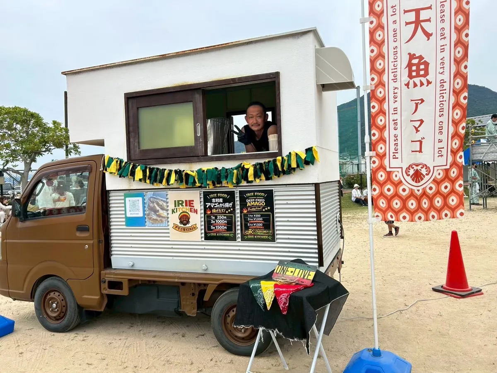

つくった一台から、
設計の考え方を。
TOWN DESIGN LABO が設計・ディレクションを担当した案件と、製造パートナーの実績から私たちがセレクションした事例をまとめています。詳細ページのある事例では、設計の考え方・仕様・許認可の要点まで掘り下げてご紹介しています。
001 · Caravan Car — OTAFUKU okonomiyaki caravan car

オタフクソース株式会社のお好み焼き実演用キッチンカー。跳ね上げ式の大開口とオーニング、折りたたみデッキを展開すると、ひとつの駐車スペースに厨房と客席が同時に立ち上がります。設計・製造ディレクションを TOWN DESIGN LABO が担当しました。
002 / 003 · Kitchen Car — KAZARI KITCHEN Type A / Type B

マットブラックにガラスショーケースの Type A と、杉板張りにミントグリーンの Type B。いずれもTOWN DESIGN LABO が設計し、自社で保有・運用している車両です。購入前に月額で試せるシェア事業「KAZARI KITCHEN」として貸し出しています。
LEASE · Kitchen Car — IRIE KITCHEN（リース導入事例）

当スタジオが設計・保有する軽トラベースのキッチンカーを、IRIE KITCHEN 様がリースで運用中。広島県廿日市市・吉和産のアマゴ（天魚）の唐揚げを、レゲエの装いをまとった一台で売っています。買う前に借りて始める「KAZARI KITCHEN」の、実際の稼働事例です。
010 · Hotel — THE NOMAD 八ヶ岳

トレーラーハウスを宿泊施設の客室棟に用いた事例。基礎を持たない車両として設置することで、固定建築とは異なる速度と自由度で宿泊事業を立ち上げられます。本事例の製造・写真は当社の製造パートナーによるもので、TOWN DESIGN LABO は同種の宿泊棟を西日本の新規案件として設計・ディレクションします。
設計の考え方まで掘り下げた事例
用途ごとに、計画の前段で何を決めているのかを整理しました。いずれも製造・写真は当社の製造パートナーによるもので、TOWN DESIGN LABO は同種の案件を西日本で設計・ディレクションします。
製造実績セレクション（全12件）
各タイルをクリックすると、案件ごとの写真ギャラリーが開きます。バー、ピザ窯搭載車、移動工房、トレーラーホテル、海上コンテナ改造、納車・陸送の記録まで、業態も規模もさまざまです。


001〜004: 設計・製造ディレクション TOWN DESIGN LABO（002・003は自社保有・運用車両） ／ 005以降: セレクション・ディレクション TOWN DESIGN LABO、製造・写真 製造パートナー